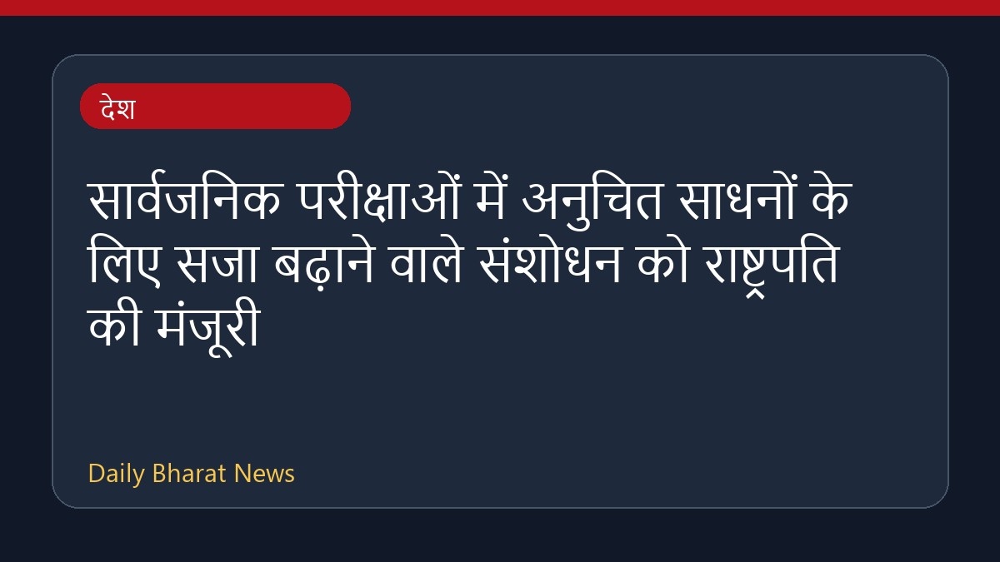

सार्वजनिक परीक्षाओं में अनुचित साधनों के लिए सजा बढ़ाने वाले संशोधन को राष्ट्रपति की मंजूरी

राष्ट्रपति ने सार्वजनिक परीक्षाओं में अनुचित साधनों और पेपर लीक से जुड़े मामलों में सजा बढ़ाने वाले संशोधन को अपनी मंजूरी दे दी है। संसद द्वारा इस संबंध में विधेयक पारित किए जाने के बाद यह कदम उठाया गया है। इस बीच, विपक्षी दलों के बहिर्गमन के बीच राज्यसभा से विधेयक पारित होने की खबरें भी सामने आई हैं। इसके अतिरिक्त, नीट मुद्दे और विरोध प्रदर्शनों से जुड़ी अन्य राजनीतिक प्रतिक्रियाएं भी चर्चा में बनी हुई हैं। उपलब्ध जानकारी के आधार पर रिपोर्ट में आगे के विवरण सीमित हैं।
मूल स्रोत: India News Sources
President Grants Assent To Amendment Enhancing Punishments For Unfair Means In Public Examinations - Live Law ↗
President Grants Assent To Amendment Enhancing Punishments For Unfair Means In Public Examinations - Live Law ↗